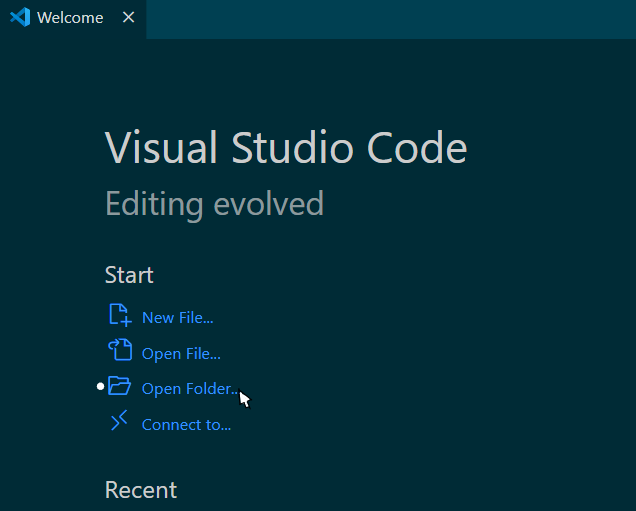
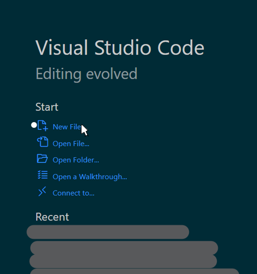

When starting to create a website, most people don't know where to even begin.
On this page, you'll learn how to make and open your very own HTML website using Visual Studio Code.
Before you start reading the rest of this page, you'll need to download Visual Studio Code or have some sort of code editor that you're familiar with.
In order to download Visual Studio Code, all you need to do is click VSC on the top of the page, second last on the nav bar.
Once you have finished, you may continue onwards.
First, you'll want to create a folder that will have your website and other information for said website. This will help you to keep track of any files you might use.
Once you have created a folder, using Visual Studio Code, click on 'Open Folder...' and select the folder you created.
Once you have done this, Visual Studio Code should look something simular to the above picture, if not the same.
The next step is to click on 'New File...' and choose Text File.
In order to change the text file into a HTML file, click on 'Select a Language' and type 'html'. You'll notice that the 'logo' at the file tab has become angle brackets.
Another way of changing the file to HTML is to click on 'Files' and use 'Save as...' to change both the name of the file and the type.
The name for the file is completely your own choice, but make sure that the 'Save as type:' shows 'HTML' because it tells the device what type of file it is.


Once you've done either the first or second step, you'll now have an HTML file that you can code on using Visual Studio Code to make your website.

To learn about how to write on your website, click on Pt_2, third on the CSS Nav Bar.